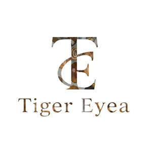

Trade Mark Journal No.2025/049 5 December 2025
UK00004298997 21 November 2025 (14)

- Class 14
- Jewellery; Necklaces [jewellery]; Pendants [jewellery]; Bracelets [jewellery]; Amulets being jewellery; Amulets [jewellery]; Pearls [jewellery]; Trinkets [jewellery]; Necklaces [jewellery, jewelry (Am.)]; Fashion jewellery; Jewelry; Gold jewellery; Charms [jewellery]; Charms for jewellery; Jewellery charms; Clasps for jewellery; Enamelled jewellery; Pearls [jewellery, jewelry (Am.)]; Items of jewellery; Jewellery items; Ornaments [jewellery, jewelry (Am.)]; Costume jewellery; Trinkets [jewellery, jewelry (Am.)]; Rings being jewellery; Rings [jewellery]; Amulets [jewellery, jewelry (Am.)]; Bracelets [jewellery, jewelry (Am.)]; Pewter jewellery; Jewellery stones; Cloisonné jewellery [jewelry (Am.)]; Wristlets [jewellery]; Cloisonné jewellery; Cloisonne jewellery; Charms [jewellery, jewelry (Am.)]; Chains [jewellery, jewelry (Am.)]; Jewellery products; Ivory [jewellery, jewelry (Am.)]; Precious jewellery; Crucifixes as jewellery; Necklaces [jewelry]; Agate as jewellery; Jewellery chains; Chains [jewellery]; Pins [jewellery, jewelry (Am.)]; Ivory jewellery; Jewellery in semi-precious metals; Medallions [jewellery, jewelry (Am.)]; Jewellery chain; Gold plated brooches [jewellery]; Pendants [jewelry]; Imitation jewellery; Cabochons for making jewellery; Jewellery chain of precious metal for necklaces; Body jewellery; Personal jewellery; Fake jewellery; Imitation jewellery ornaments; Sterling silver jewellery; Bracelets [jewelry]; Jewellery incorporating pearls; Paste jewellery; Jewellery (Paste -); Pearls [jewelry]; Amulets [jewelry]; Jewellery articles; Jewellery made from gold; Jewellery made from silver; Diamond jewelry; Jewellery chain of precious metal for anklets; Jewellery containing gold; Jewellery in precious metals; Jewellery of precious metals; Jewellery chain of precious metal for bracelets; Clasps for jewelry; Artificial jewellery; Jewellery for personal wear; Charms [jewelry]; Jewelry charms; Charms for jewelry; Jewellery rope chain for necklaces; Jewellery fashioned of semi-precious stones; Agate [unwrought]; Unwrought agate; Agates; Chalcedony; Opal; Chalcedony used as gems; Semi-precious gemstones; Semi-precious stones; Cabochons; Opals; Topaz; Statuettes made of semi-precious stones; Olivine [peridot]; Peridot; Gemstones; Tanzanite being gemstones; Sardonyx; Precious and semi-precious stones; Spinel [precious stones]; Sardonyx [unwrought]; Unwrought sardonyx; Cuff links of precious metals with semi-precious stones; Cuff links made of precious metals with semi-precious stones; Jade [jewellery]; Natural gem stones; Artificial stones [precious or semi-precious]; Sapphires; Statuettes made of semi-precious metals; Amber pendants being jewellery; Emerald; Jewelry of yellow amber; Ornaments, made of or coated with precious or semi-precious metals or stones, or imitations thereof; Olivine [gems]; Statues and figurines, made of or coated with precious or semi-precious metals or stones, or imitations thereof; Artificial gem stones; Cabochons for making jewelry; Sapphire; Precious and semi-precious gems; Wooden bead bracelets; Ivory jewelry; Jewel pendants; Silver necklaces; Synthetic stones [jewellery]; Jewellery of yellow amber; Semi-precious articles of bijouterie; Articles of jewellery with ornamental stones; Gold necklaces; Bead bracelets; Chain mesh of semi-precious metals; Unwrought precious stones; Precious gemstones; Figurines of precious stones; Imitation precious stones; Choker necklaces; Necklace charms; Necklaces; Earrings; Silver-plated necklaces; Bracelet charms; Silver-plated earrings; Bangle bracelets; Bib necklaces; Gold-plated necklaces; Silver earrings; Jewellery rope chain for bracelets; Pendants; Gold-plated earrings; Clip earrings; Silver-plated bracelets; Identification bracelets [jewelry]; Jewellery rope chain for anklets; Bracelets; Rings [jewelry]; Pendant watches; Rings [jewellery, jewelry (Am.)]; Pierced earrings; Jewelry stickpins; Jewelry (Paste -) [costume jewelry]; Paste jewelry [costume jewelry]; Amberoid pendants being jewellery; Silver bracelets; Gold bracelets; Paste jewellery [costume jewelry (Am.)]; Paste jewellery [costume jewelry [Am.]]; Silver thread [jewellery, jewelry (Am.)]; Costume jewelry; Jewelry chains; Chains [jewelry]; Identification bracelets of precious metal [jewelry]; Bracelets made of embroidered textile [jewelry]; Drop earrings; Earrings of precious metal; Necklaces of precious metal; Bracelets made of embroidered textile [jewellery]; Pendants for watch chains; Gold plated bracelets; Silver; Unwrought silver; Silver rings; Gold plated earrings; Gold; Gold earrings; Silver watches; Gold plated rings; Gold plated chains; Gold rings; Gold medals; Watches made of plated gold; Jewellery plated with precious metals; Imitation gold; Jewellery made of plated precious metals; Jewellery fashioned from bronze; Gold chains; Jewellery made of crystal coated with precious metals; Jewellery made of bronze; Jewellery coated with precious metal alloys; Silver-plated rings; Jewellery fashioned from non-precious metals; Rings [jewellery] made of precious metal; Chain mesh of precious metals [jewellery]; Jewelry charms in precious metals or coated therewith; Jewellery fashioned of precious metals; Square gold chain; Jewellery made of non-precious metal; Bracelets of precious metal; Jewellery in non-precious metals; Chains made of precious metals [jewellery]; Rings coated with precious metals.
Tiger Eye Atelier Ltd